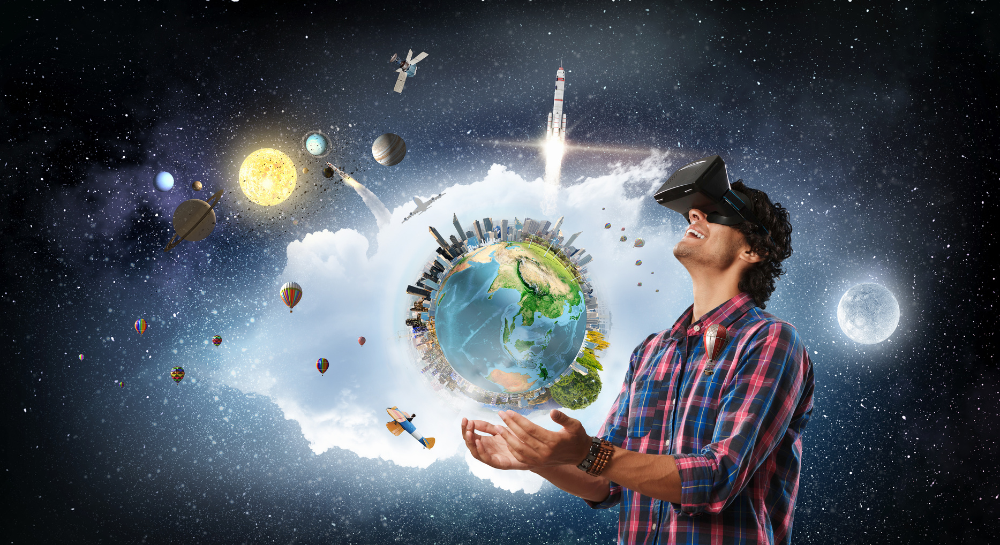
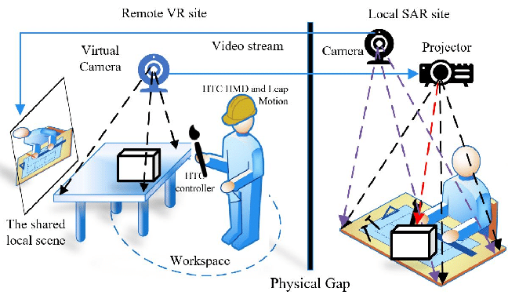
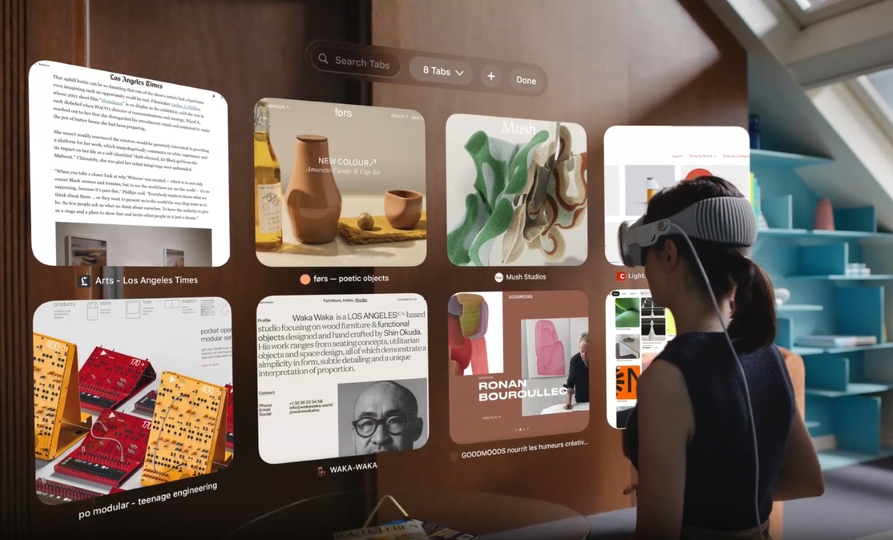
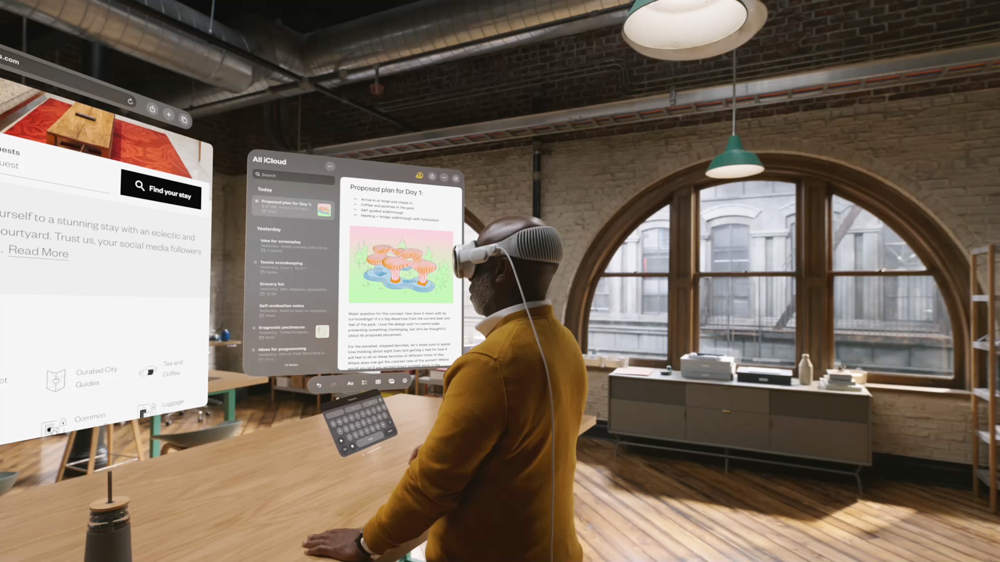

Mixed Reality (MR) is like the ultimate mashup of Augmented Reality (AR) and Virtual Reality (VR), giving you mind-blowing experiences that mix up the real world and the digital realm in a crazy seamless way. Think about it: in mixed reality, digital stuff isn't just slapped onto the real world like in AR. Nope, it's like these virtual objects are in on the action, vibing with the real world, and getting all interactive with the physical space around you. It's like stepping into a whole new dimension where digital and reality become besties and do their thing in a totally natural and mind-bending way.
Mixed Reality links
Human:
The synergy between individuals and Mixed Reality entails crafting immersive encounters that seamlessly integrate tangible and virtual realms. Human innovators have the capacity to engineer applications spanning the educational, entertainment, design, healthcare, navigational, artistic, sports, productivity, virtual event domains, and beyond, all harnessing the prowess of Mixed Reality technology.Spaces:
Mixed reality and spatial computing go hand in hand, with spatial computing being the tech that empowers computers to groove with the physical realm in three dimensions. This creates a slick fusion of the digital and physical worlds, no glitches, all flow. For instance MR used for geospatial analysis, architectural visualization and education are directly dependent on enivenvironment.

Remote & Unfolding Relations:
The infusion of mixed reality tech into our day-to-day grind opens up a whole new world of unexplored relationship dynamics. These connections can unfold in a variety of ways like educational and collaborative work-spaces, thanks to the immersive and interactive nature. Moreover, mixed reality has a substantial influence on how we engage with far-flung peers, causing a serious shift in the way we interact with folks separated by geography. This shift ramps up the intensity of engagement and immersion in remote interactions to a whole new level, which ends up maintaining the virtual presence.Non-human entities:
The dynamic between mixed reality and non-human entities, like animals, hinges on blending virtual or augmented elements seamlessly with our tangible experiences. This fusion births fresh and inventive interactions, crafting a realm where innovation and engagement converge in immersive encounters. Virtual animal interactions and animal care training are the best suited applications of MR on non-dominating species. For example, cows in Russia are stuck inside due to cold, so cattle owners have started fitting VR headsets to increase milk production by showing cows greener fields. Empowering Humanity with Mixed Reality
The symbiotic relationship between mixed reality and humans centers on melding virtual and real-life experiences. Mixed reality, as expounded by Microsoft (2021), revolves around seamlessly merging virtual and augmented elements to craft inventive interactions and immersive experiences. This dynamic merger alters how individuals perceive and interact with their surroundings, yielding a unique fusion of digital and human realms. Moreover, mixed reality enhances diverse facets of human interactions, spanning education, entertainment, collaboration, and emotional well-being, aligning seamlessly with the transformative vision articulated by IBM (IBM, n.d.). As the technological frontier of mixed reality advances, its impact on human engagement expands, introducing fresh possibilities across various industries.
Envisioning the Future Through the Lens of MR
Present Tech Spotlight!

The future applications of MR sounds very interesting. However, in the ever-evolving landscape of technology, the present era is marked by remarkable advancements that have fundamentally reshaped how we interact with the world. Highlighting the recent product, Apple Inc. has recently launched a product named Vision Pro. It is rooted on the technology of virtual reality (VR) blended with augmented reality. This product sets a perfect benchmark for the future advancements.
Vision Pro is Apple’s latest spatial computer, embedded with sensors, cameras, microphones, dual chip processing unit and speakers (Apple n.d.), enabling best user experience. Apple researchers also mentioned that it functions using hand gestures and eye tracking. Therefore becoming one of the best interactive wearable device.

Thank You
References:
- Microsoft. (2021). Mixed Reality. https://www.microsoft.com/en-us/hololens
- IBM. (n.d.). Transforming industries with mixed reality. https://www.ibm.com/thought-leadership/institute-business-value/report/ar-vr-workplace?mhsrc=ibmsearch_a&mhq=%20mixed%20reality
- Apple.(n.d.). Vision Pro. https://www.apple.com/apple-vision-pro/
Image credits:
- An MR Remote Collaborative Platform Based on 3D CAD Models for Training in Industry. Photo by Peng Wang
- CHICK-FIL-A'S FIRST WORK FROM MCCANN NY SHOWS COWS KNOW VR. Photo By Jessica Wohl. Published on February 10, 2017.
- Photo a woman wearing a virtual reality headset with a city in the background generative ai. Generated by Freepik. https://www.freepik.com/free-photos-vectors/mixed-reality/2
- 5 Advantages of Virtual Reality in Businesses. Published April 9, 2019. Photo By Lynxpro. https://www.lynxpro.com/blog/5-advantages-virtual-reality-businesses/
- Mixed reality architecture design. Published on December 17, 2022. https://learn.microsoft.com/en-us/azure/architecture/guide/mixed-reality/mixed-reality-overview
- Virtual reality surgery: the healthcare potential of augmented reality. Published on May 03, 2018. Photo by NRi. https://www.nridigital.com/health/virtual-reality-surgery-healthcare-potential-augmented-reality/
- Application of mixed reality for improving architectural design comprehension effectiveness. Published on June, 2021. Automation in Construction. Volume 126. https://doi.org/10.1016/j.autcon.2021.103677
- 8 Future Mixed Reality Applications To Watch Out For. Published on November 3, 2019. Photo by Naveen Joshi, CEO of Allerin. Forbes. https://www.forbes.com/sites/cognitiveworld/2019/11/03/8-future-mixed-reality-applications-to-watch-out-for/?sh=28b571993465
- Vision Pro. Apple.(n.d.). https://www.apple.com/apple-vision-pro/
- Apple Vision Pro: Is it legal to drive when wearing VR or AR glasses?. WhichCar. Published on June 6, 2023. https://www.whichcar.com.au/advice/apple-vision-pro-is-it-legal-to-drive-when-wearing-ar-glasses